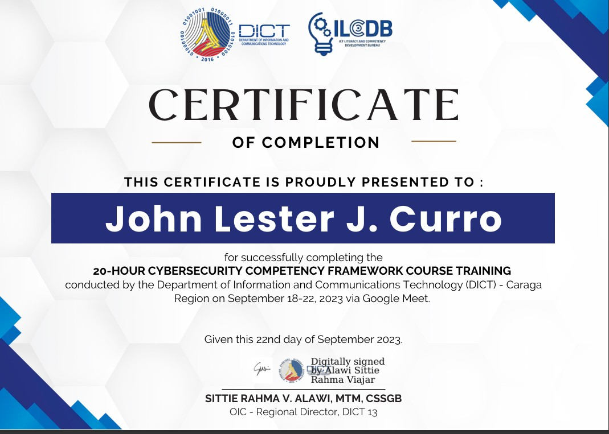

About
Personal Information
- Birthday: 16 April 2002
- Website: www.example.com
- Phone: +9511987420
- City: Los Angeles Butuan City, Philippines
- Age: 21
- Degree: Undergraduate
- Email: johnlestercurro@gmail.com
- Repository:github.com/johnlestercurro
Competency Synopsis
I am an enthusiastic and dedicated IT college student with a range of foundational skills in various areas of technology and multimedia. Currently pursuing my education in the field of Information Technology, I have acquired valuable competencies in several key areas:
1. Programming Fundamentals: I possess a solid understanding of basic programming concepts, enabling me to write and comprehend simple code. While my expertise is at a foundational level, I am committed to expanding my programming skills further.
2. Multimedia Skills: My proficiency extends to multimedia tasks such as video editing and photo enhancement. I am capable of creating and editing multimedia content, adding a creative touch to visual projects.
3. Computer Literacy: I am adept at navigating various computer systems and platforms, utilizing my knowledge to troubleshoot issues and adapt to new technologies. My ability to quickly grasp new software and tools aids in efficient problem-solving.
4. Eager Learner: As a current student in the field of IT, I am constantly seeking opportunities to expand my knowledge. I have a strong passion for technology and a drive to learn and master new skills that are relevant in the rapidly evolving IT landscape
5. Adaptable and Versatile: My ability to adapt to various roles and tasks reflects my diverse skill set. I am comfortable taking on challenges in different domains, driven by a desire to broaden my expertise.
As I continue my academic journey, I am determined to expand my programming capabilities, delve deeper into IT concepts, and gain hands-on experience in real-world projects. My combination of basic programming knowledge, multimedia skills, computer literacy, Microsoft proficiency, and a thirst for knowledge positions me to contribute effectively to technological endeavors
Work Experience & Trainings
Support Intern | (NEMM) Northeastern Mindanao Mission | Senior High Internship
Technical Assistance: Provided technical support to staff members, assisting with various computer-related issues.
Documentation: Helped document solutions to common technical problems and created reference materials for future use.
Problem Solving: Utilized problem-solving skills to address technical challenges and find solutions.
CYBERSECURITY COMPETENCY FRAMEWORK COURSE TRAINING
Department of Information and Communications Technology (DICT)- CARAGA
Via Google Meet September 18-22, 2023
Multimedia Skills Development | Northern Davao Mission (NDM) | October 2021
Topics Covered: Attended a seminar focused on enhancing multimedia skills, including video capturing, editing, and photo manipulation.
Techniques Learned: Learned techniques to create visually appealing content for various platforms.
SOLO LEARN COMPLETER
Department of Information and Communications Technology (DICT)- CARAGA
Completed the Courses:
- Introduction to HTML
- Introduction to CSS
- Introduction to JAVA
Affiliation
Active involvement in technology-related organizations and clubs.
Computer Enthusiasts Club
2019 - 2021
Member
- Actively engaged as a member of the Computer Enthusiasts Club, a community of students dedicated to exploring technology and innovation.
- Participated in club meetings, workshops, and discussions focused on the latest trends and developments in the IT and computer industry.
- Collaborated with fellow club members on various projects and initiatives, contributing to the enhancement of technical skills and knowledge.
Other Skills
- Knowledgeable in Canva, Picsart
- Knowledgeable in Photo Editing, Photoshop
- Knowledgeable in CapCut
Educational Background
| Level | Name of School/Degree | Date Graduated |
|---|---|---|
| Under-Graduate | Caraga State University Brgy. Ampayon, Butuan City, Ph |
On-going |
{kind=link}